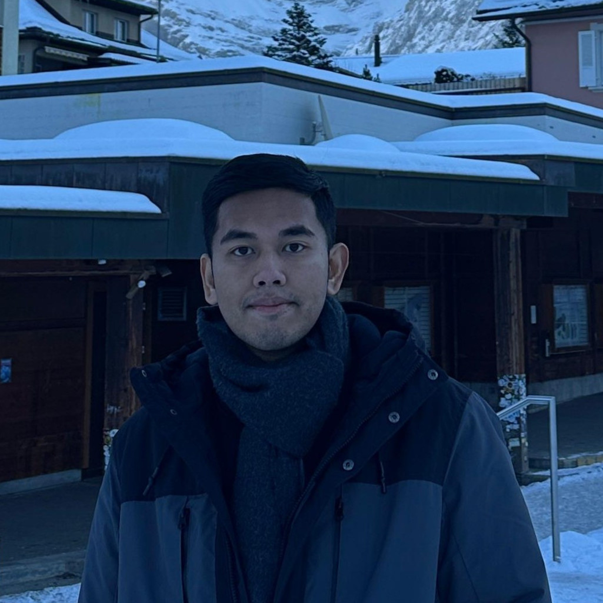

Kisah Sukses: Dari FABU ke Luar Negeri

Sejak SMA, Michael Lesa sudah mengikuti olimpiade sains. Minat itu berlanjut ketika ia menempuh S1 Kimia di Universitas Indonesia (UI) dengan dukungan Beasiswa Unggulan. Pada 2021, ia meraih medali perak bidang kimia dalam Kompetisi Nasional Matematika dan Ilmu Pengetahuan Alam (KN-MIPA). Setahun kemudian, ia menyelesaikan studi sarjananya. Di luar kompetisi, Michael juga terlibat dalam penelitian. Pada 2023, namanya tercantum sebagai salah satu penulis artikel di jurnal Materials Advances. Bersama timnya, ia menguji material yang dapat membantu proses pembentukan hidrogen.
Menempuh studi di Prancis dan Polandia
Setelah lulus dari UI, Michael meraih beasiswa Erasmus Mundus untuk mengikuti program magister SERP+. Program ini membawanya belajar di Université Paris-Saclay, Prancis, dan Adam Mickiewicz University, Polandia. Beasiswa Erasmus Mundus mencakup biaya pendidikan serta memberikan dukungan untuk perjalanan, visa, dan biaya hidup. Untuk tesisnya, Michael bergabung dengan tim peneliti di CEA, sebuah lembaga riset di Prancis. Di sana, ia membuat dan menguji material berbasis oksida logam. Ia menyelesaikan studi magisternya pada 2025.
Melanjutkan penelitian di Belanda
Pada Oktober 2025, Michael bergabung dengan Pollice Research Group di University of Groningen, Belanda, sebagai mahasiswa doktoral. Penelitiannya berfokus pada reaksi kimia berbantuan katalis, dengan hasil dari satu percobaan digunakan untuk menentukan percobaan berikutnya.
Bagi pembaca FABU yang sedang mempertimbangkan studi lanjut, perjalanan Michael memberi contoh bagaimana pengalaman selama kuliah dapat membantu menentukan arah studi. Titik awalnya bisa berupa satu tugas akhir, proyek, atau kegiatan yang memunculkan pertanyaan yang ingin dipelajari lebih jauh. Dari pengalaman itu, calon pendaftar dapat memilih program yang sesuai dan menjelaskan alasan pilihannya dengan lebih konkret dalam esai beasiswa.
Ingin menjadi bagian dari kisah sukses selanjutnya? Mari bertukar pengalaman bersama komunitas FABU dan konsultasikan persiapanmu melalui GenuWin's Consule